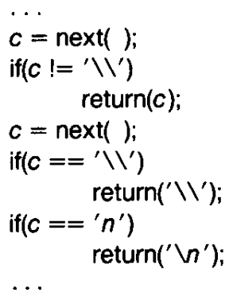
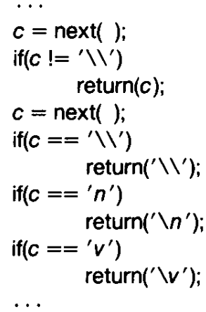
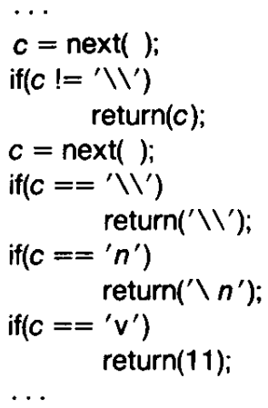
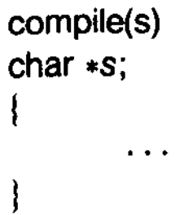
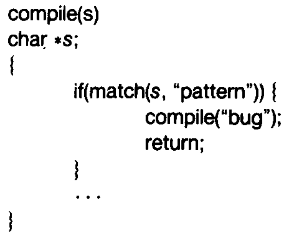
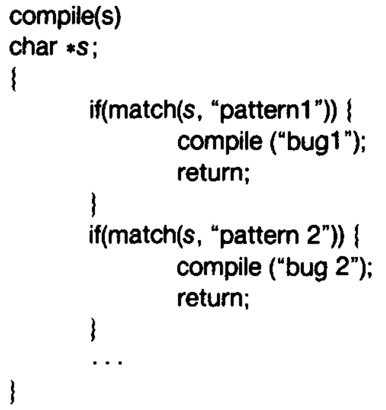
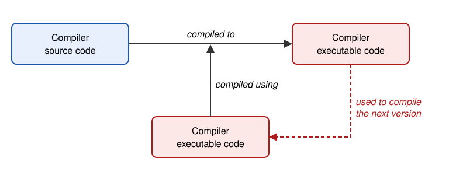

A quine is a computer program which takes no input and produces a copy of its own source code as its only output. The standard terms for these programs in the computability theory and computer science literature are “self-replicating programs”, “self-reproducing programs”, and “self-copying programs”.
# Example C. Note that %r will quote automatically.
c = 'c = %r; print(c %% c)'; print(c % c)Turing Award Lecture by Ken Thompson
“To what extent should one trust a statement that a program is free of Trojan horses? Perhaps it is more important to trust the people who wrote the software.”
“The C compiler is written in C. What I am about to describe is one of many”chicken and egg" problems that arise when compilers are written in their own language."

“Figure (shown above) is an idealization of the code in the C compiler that interprets the character escape sequence. This is an amazing piece of code. It knows in a completely portable way what character code is compiled for a new line in any character set. The act of knowing then allows it to recompile itself, thus perpetuating the knowledge.”If in a different character set, the ASCII code of ‘’ is different, then we will get that character set’s value (the information is baked into the compiler that will be used to compile this compiler).
Suppose we wish to add a new character ’ that represents a vertical tab as follows. But this will not work at the compiler has not yet learnt the escape-sequence for the vertical tab character.

So we create a temporary non portable implementation as follows

Once the compiler has learned the escape sequence through the non-portable implementation, we can go back to the portable implementation.
“This is a deep concept. It is as close to a ‘learning’ program as I have seen. You simply tell it once, then you can use this self-referencing definition.”
The following represents a crude version of a compiler that accepts a string (program source code) and returns the executable code.

Now, let’s say we use some code like the following in the compiler to plant a trojan horse. Let’s say that the pattern checks to see if we are compiling the login program.

However, such a trojan can be easily detected even through a casual browse/review of the compiler’s source code. Now, comes the final idea.

In this, the second pattern matches to check if we are compiling a compiler. Further the “bug2” that is inserted is a quine that contains both the trojans as the payload.
Once you have compiled this compiler into an executable \(C\), you can now remove the trojans from the compiler source code. If the compiler source code is compiled using \(C\), then it will always have the trojan (even if the source code seems correct on a manual review). Further, this is a perpetuates as the compiler has learned the trojan.

Quote from Ken Thompson: “The moral is obvious. You can’t trust code that you did not totally create yourself. (Especially code from companies that employ people like me.) No amount of source-level verification or scrutiny will protect you from using untrusted code. In demonstrating the possibility of this kind of attack, I picked on the C compiler. I could have picked on any program-handling program such as an assembler, a loader, or even hardware microcode. As the level of program gets lower, these bugs will be harder and harder to detect. A well-installed microcode bug will be almost impossible to detect.”
Testing is unlikely to expose this problem, as testing only attempts a small subset of the input/output pairs
Before we can talk about checking that two programs are equivalent, let’s see how we can prove that a single program is correct. Consider the following function that multiplies two numbers using repeated addition:
// precondition: b >= 0
int mult(int a, int b) {
int r = 0;
int i = 0;
while (i < b) {
// preservation (loop invariant): i < b and r = a*i
r = r + a;
i = i + 1;
}
return r;
}
// postcondition: return value == a * bBy induction on the number of loop iterations, the program can be shown to be correct for every input satisfying the precondition, not just the ones we tested.
Notice that the hard, creative part is guessing the invariant; once it is written down, checking the three conditions is mechanical, and can be done automatically by a tool (e.g., a theorem prover).
Connection to equivalence checking: Instead of comparing mult against a mathematical specification (\(a \times b\)), we could compare it against another program, e.g., an optimized version produced by a compiler. An equivalence checker runs both programs side by side and looks for invariants that relate the states of the two programs (e.g., “variable r in program 1 equals register eax in program 2 at these two corresponding points”). If such relational invariants can be proven using the same base case + inductive step argument, the two programs are equivalent.